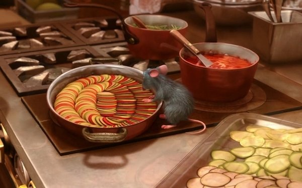
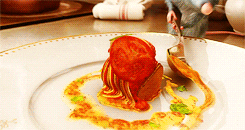

Ratatouille from Ratatouille
Table of Contents
About the Movie
Ingredients
Instructions

About the Movie
Remy (Patton Oswalt), a resident of Paris, appreciates good food and has quite a sophisticated palate.
He would love to become a chef so he can create and enjoy culinary masterpieces to his heart's delight. The only problem is, Remy is a rat.
When he winds up in the sewer beneath one of Paris' finest restaurants, the rodent gourmet finds himself ideally placed to realize his dream.
Genre: Comedy
Original Language: English
Director: Brad Bird
Producer: Brad Lewis
Release Date (Theaters): Jun 29, 2007
Ingredients
For the Sauce
- Diced Tomatoes
- Olive Oil
- Balsamic Vinegar
- Herbs de Provence
- Garlic
- Basil
Vegetables
- Tomatoes
- Zucchini
- Eggplant
- Onion

Instructions
Make the ratatouille sauce. Blend together diced tomatoes, olive oil, balsamic vinegar, Herbs de Provence, garlic, basil, and salt.
Spread the sauce into a baking dish.
Cut the veggies. You’ll want slices of eggplant, zucchini, tomatoes, onions, and eggplant.
Arrange veggies in baking dish. Alternate between one slice of each vegetable: zucchini, tomatoes, onions, and eggplants. Keep them in the same order.
Cook the ratatouille dish. Drizzle with olive oil, sprinkle with salt and pepper, and bake until veggies are soft and tender.
Return to the top
Return to main page